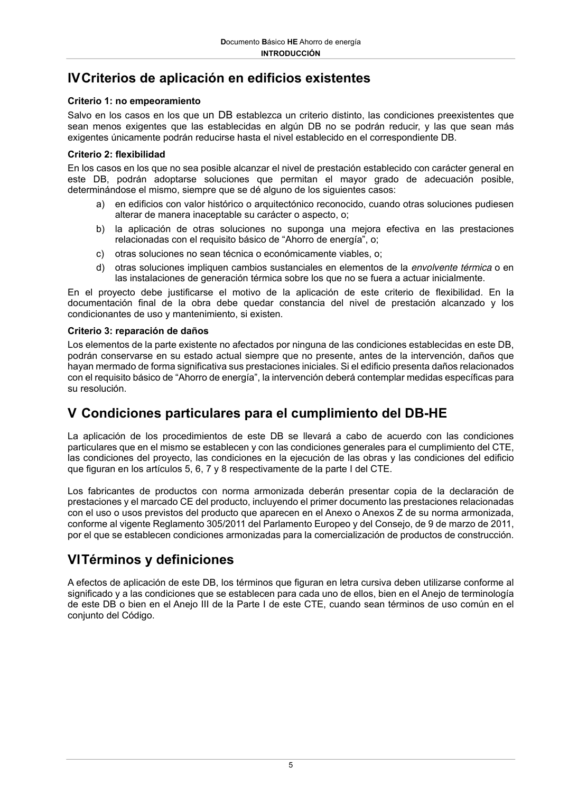

DB-HE · INTRODUCCIÓN · versión 2022-06-14
SHA256: 7f890bd495552e979f83f72c5f5c7b642e745911a8e343a7b5b73023ce0e1f05 · página física 5 de 56 · métodos de encabezado
solo si están cotejados.
Formatos: Markdown · JSON de bloques · PDF p. 5 · imagen PNG
Documento Básico HE Ahorro de energía INTRODUCCIÓN 5 IV Criterios de aplicación en edificios existentes Criterio 1: no empeoramiento Salvo en los casos en los que un DB establezca un criterio distinto, las condiciones preexistentes que sean menos exigentes que las establecidas en algún DB no se podrán reducir, y las que sean más exigentes únicamente podrán reducirse hasta el nivel establecido en el correspondiente DB. Criterio 2: flexibilidad En los casos en los que no sea posible alcanzar el nivel de prestación establecido con carácter general en este DB, podrán adoptarse soluciones que permitan el mayor grado de adecuación posible, determinándose el mismo, siempre que se dé alguno de los siguientes casos: a) en edificios con valor histórico o arquitectónico reconocido, cuando otras soluciones pudiesen alterar de manera inaceptable su carácter o aspecto, o; b) la aplicación de otras soluciones no suponga una mejora efectiva en las prestaciones relacionadas con el requisito básico de “Ahorro de energía”, o; c) otras soluciones no sean técnica o económicamente viables, o; d) otras soluciones impliquen cambios sustanciales en elementos de la envolvente térmica o en las instalaciones de generación térmica sobre los que no se fuera a actuar inicialmente. En el proyecto debe justificarse el motivo de la aplicación de este criterio de flexibilidad. En la documentación final de la obra debe quedar constancia del nivel de prestación alcanzado y los condicionantes de uso y mantenimiento, si existen. Criterio 3: reparación de daños Los elementos de la parte existente no afectados por ninguna de las condiciones establecidas en este DB, podrán conservarse en su estado actual siempre que no presente, antes de la intervención, daños que hayan mermado de forma significativa sus prestaciones iniciales. Si el edificio presenta daños relacionados con el requisito básico de “Ahorro de energía”, la intervención deberá contemplar medidas específicas para su resolución. V Condiciones particulares para el cumplimiento del DB-HE La aplicación de los procedimientos de este DB se llevará a cabo de acuerdo con las condiciones particulares que en el mismo se establecen y con las condiciones generales para el cumplimiento del CTE, las condiciones del proyecto, las condiciones en la ejecución de las obras y las condiciones del edificio que figuran en los artículos 5, 6, 7 y 8 respectivamente de la parte I del CTE. Los fabricantes de productos con norma armonizada deberán presentar copia de la declaración de prestaciones y el marcado CE del producto, incluyendo el primer documento las prestaciones relacionadas con el uso o usos previstos del producto que aparecen en el Anexo o Anexos Z de su norma armonizada, conforme al vigente Reglamento 305/2011 del Parlamento Europeo y del Consejo, de 9 de marzo de 2011, por el que se establecen condiciones armonizadas para la comercialización de productos de construcción. VI Términos y definiciones A efectos de aplicación de este DB, los términos que figuran en letra cursiva deben utilizarse conforme al significado y a las condiciones que se establecen para cada uno de ellos, bien en el Anejo de terminología de este DB o bien en el Anejo III de la Parte I de este CTE, cuando sean términos de uso común en el conjunto del Código.
